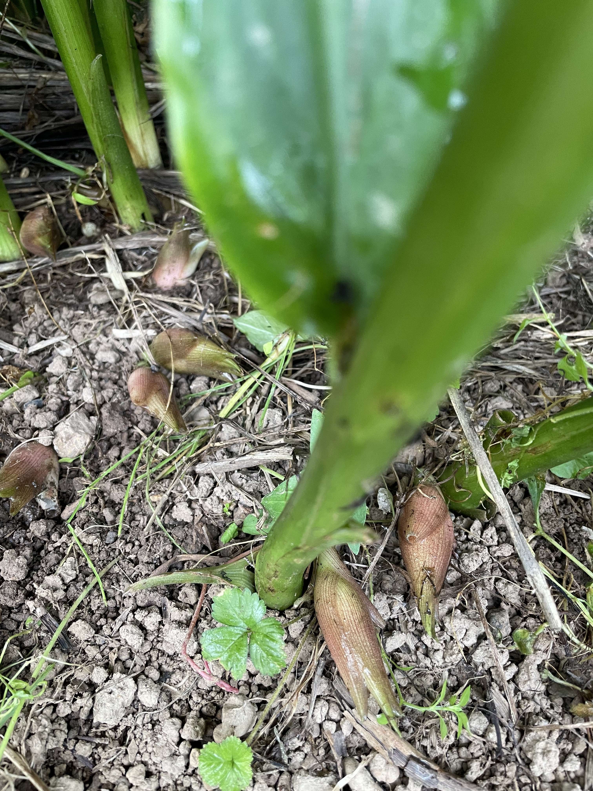
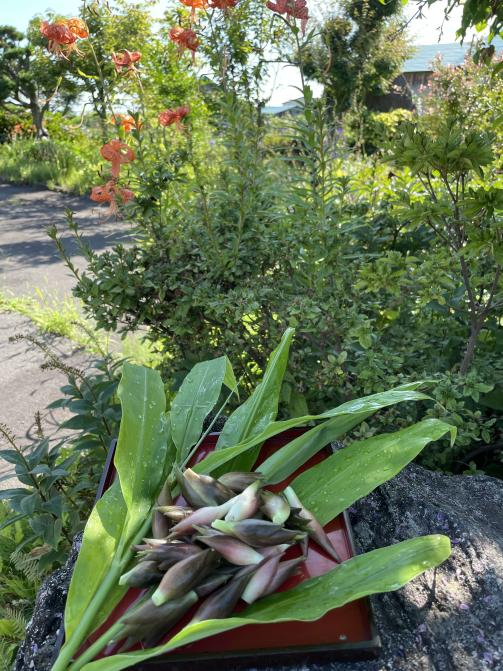

ミョウガ
ミョウガは、日本を代表する香辛料であり、生姜に似た味と香りが特徴です。当店のミョウガは新鮮で美味しい品質を提供しています。さまざまな和食・洋食・中華料理に利用できる汎用性の高い香辛料であり、お寿司や酢の物などの和食に欠かせません。
特性
- 和食・洋食・中華料理など、さまざまな料理に利用可能
- 生姜と似た風味がある
- 消化促進や食欲増進効果がある
野菜の苗植え・収穫時期
ミョウガの苗植えは春から初夏にかけて行われます。収穫時期は苗植えから約2〜3か月後の夏から秋にかけてです。土壌や栽培方法によっても収穫時期は異なる場合がありますので、詳細な時期は専門の農業資料などをご参考にしてください。
ミョウガの写真

採れた日付: 2023年8月5日

畑の日付: 2023年8月5日